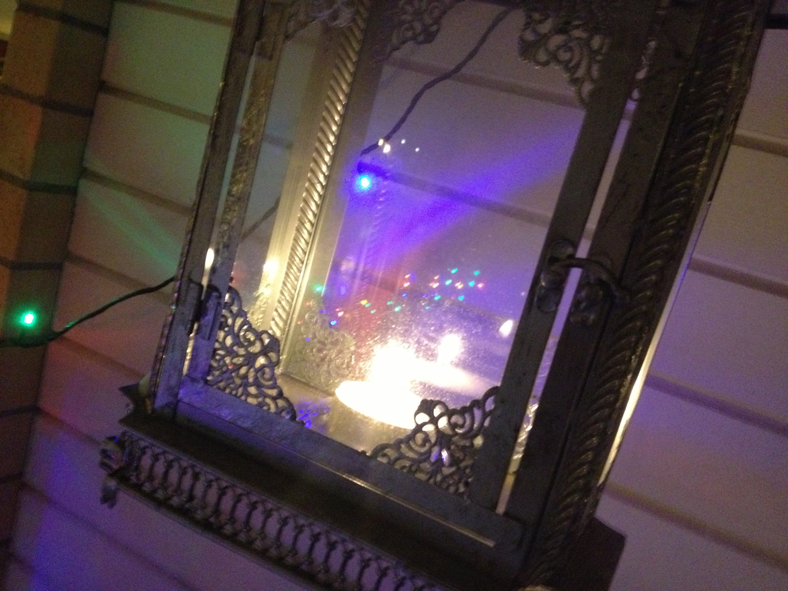
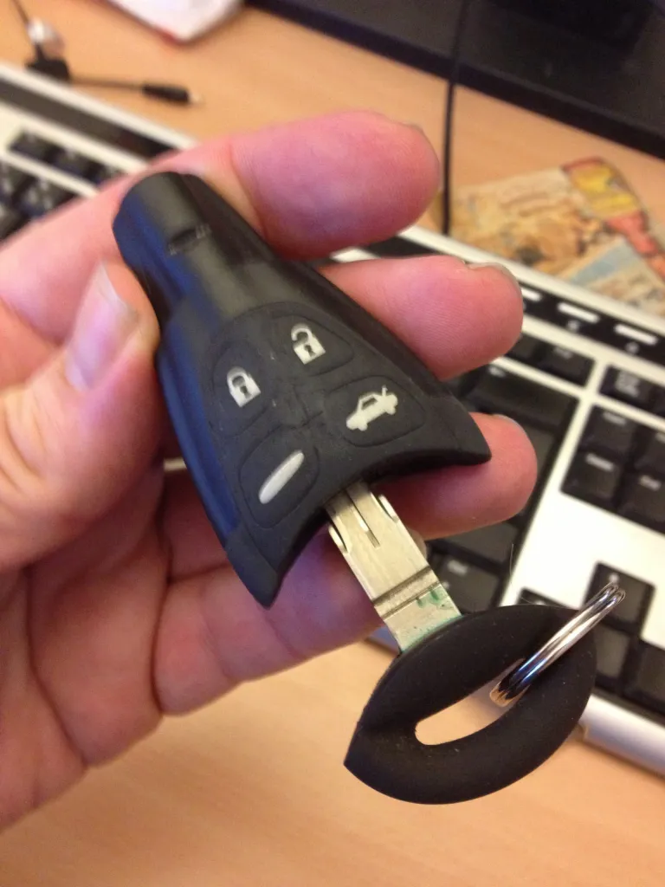

Idag har det gått hela 2 år sedan jag miste en underbar vän. Detta satte så klart en lite dyster ton över dagen. Mängder av hjärtan och kramar fram och tillbaka i sociala medier såsom facebook gör ju att man åter påminns om vilken verklig färgklick som försvunnit från planeten.

Du är saknad underbara Jenny!
Mitt i ymnigt snöfall blev det även idag lunch och jag hade med några nuvarande kollegor som också varit dåvarande kollegor bokat in en lunch på stan. Lite glad och trevlig lunchning kändes rätt – men så kom det en överraskning av underlig slag. När jag skottat av min lilla bil så visar det sig att fjärrupplåsningen inte ville funka. Verkar som jag haft min bilnyckel i kläm bland allt bråte i fickan och därmed lyckats ladda ur den. Tänkte den kunde vila lite så kanske den funkar sen? Sen var man ju så klart också hungrig. Dan fick bli chaufför och Saab-ägare som han också är tänkte jag att man kanske kunde tjyvladda nyckeln i hans bil men det gick ju inte. Jag har en 9-3a och han en 9-5a och tydligen är det bara 9-3:orna som har det där ”flötet” till nyckel.
Nåväl, efter mat gjorde jag ett nytt försök och det gick såklart inte å låsa upp. Men jag konstaterar ju återigen (jo jag har funderat på detta förut men det har aldrig hänt) att jag har ju ett ”vanligt” nyckelhål i dörren på förrarsidan? Men det där flötet går ju inte å låsa upp med..
Tog å knatade bort till den Saabverkstad som ligger precis på andra sidan kontoret. Där fick jag några sköna hånleenden och sen såklart skämmas. JAG om nån ska ju förstå mig på teknik! Jodå, hade helt enkelt inte alls fattat att det VISST finns en nyckel i det där flötet till nyckel. Man lär helt enkelt trycka på sjävla Saabloggan och sen dra isär. Tjena, å jag som gått å trott den var vattentät och bara gick att ladda via induktion precis som en eltandborste… Piiiinsamt!

Nu när jag vet hur man får fram nyckeln blir jag lite lat och knatar inte runt kontoret igen och provar utan går å jobbar istället…
När sen dagen tar slut visar det sig ju så klart att även med nyckel till låset strular det. Ingen har väll vridit runt det där låset på mycket länge så det sitter så klart fast å rubbar sig ICKE…!!!
Liftar hem med en annan kollega och får sedan transport av en god granne och hämtar sambons bil i andra änden av Gävle. Efter en tripp tillbaka till Sandviken med reservnyckel i näven så är det bara å låsa upp. Bara efter nån minut på laddning funkar även den nyckel som strejkat. Gött… Hemfärd! Vilket äventyr i strul… Och vips tänker man ju så klart åter på lilla Jenny – när man for på äventyr med henne hände alltid en massa tok. Kommer aldrig glömma en bandyfinal i Uppsala som slutade med att min bil blev inlåst till dagen efter och en underbart hjärtligt skrattande Jenny… Ja jösses…!
Sen kommer det en knorr till på dan. Bland snurret på facebook har ju den låt jag skrev strax efter det tragiska väckt en hel del intresse igen. Denna gång fick jag dock hugg från en på Cityradion som tyckte jag skulle skicka in låten dit! Så nu har man minsann skickat in låten till lokalradion!!! Vore ju en verklig hyllning till min kära vän om hennes låt spelas där! Hoppas hoppas… <3

Nu får det bli ett tänt ljus för min saknade vän, lite teve å sen zZzzzZZzzzzz…..